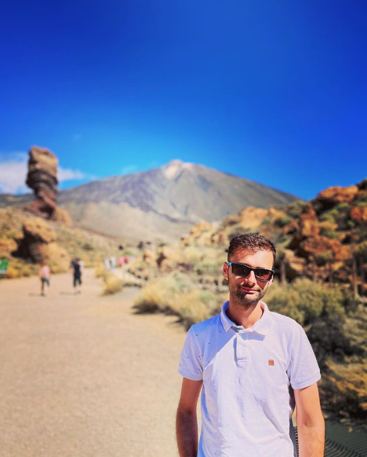

David-Iulian Lazar
Summary

Web developer and designer with expertise from a rigorous web development bootcamp, proficient in HTML, CSS,
JavaScript, and experienced with frameworks like React.
A detail-oriented problem-solver, translating design concepts into user-friendly and visually appealing websites.
Education
- Bachelor degree in Polymer Science and Engineering - Gheorghe Asachi University, “Cristofor Simionescu”
Faculty of Chemical Engineering and Environmental Protection (2012-2016)
Work Experience
Service desk specialist - First Central Insurance & Technology Group
October 2019 - present
- Delivering technical assistance and support to address incoming queries and issues pertaining to computer
systems, software, and hardware.
- Engaging in responsive communication via telephone or email to address user inquiries.
- Attending to email correspondences initiated by customers seeking assistance.
- Employing inquiry-based techniques to ascertain the underlying nature of reported problems.
- Conducting subsequent follow-ups with customers to confirm the resolution of identified issues.
Technical documentation engineer - Atexis
September 2017 - October 2019
- Conducting analyses of procedural methodologies associated with distinct components of Airbus aircraft.
- Authoring and revising procedural documentation applicable to aircraft operations.
- Verifying the compliance of newly formulated procedures with the Simplify Technical English (STE) standards.
- Providing mentorship to newly onboarded colleagues.
- Offering proofreading assistance to inexperienced colleagues in order to enhance the quality of their work.
- Actively engaging in various meetings with Airbus company clients.
Fresh Engineer - Lear Corporation
July 2016- June 2017
- Generating technical documentation for each sewing machine, detailing specific procedures.
- Instructing the team on the utilization of the newly implemented automatic sewing machine program.
- Configuring the parameters of the automatic sewing machine to optimize its functionality.
- Oversight of the automated sewing machines to ensure proper operation and performance.
- Collaborating in meetings with the quality team to enhance the overall efficiency and quality of workflow
processes.
Skills
- Communication ⭐⭐⭐⭐⭐
- Problem-Solving ⭐⭐⭐⭐⭐
- JavaScript ⭐⭐⭐⭐⭐
- Version Control/Git ⭐⭐⭐⭐⭐
Awards and Certifications
- Manual testing Wantsome the Friendly IT Academy 2019
- The Complete 2024 Web Development Bootcamp
Others
My hobbies
Contact me